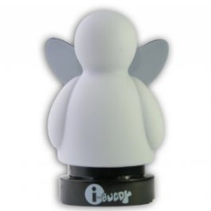

Your Personal Lync Status Notifier Gadget
LyncFellow shows your Lync status by glowing the gadgets head in the color of your status.
LyncFellow is a free software created by Glück & Kanja Consulting AG and compatible with iBuddy.
LyncFellow runs without administrative rights on all Windows systems compatible with Microsoft Lync Client.
Created for Microsoft Lync, LyncFellow is a smart and non-obtrusive software waiting in your Windows Tray and when your Lync status changes and your USB fellow is connected, it will update the color matching your status.
Not only the head glows in green, yellow or red depending if you're available, busy or away. In addition the fellow will dance and beat it's wings when you receive a call.
LyncFellow installs a single executeable running in your Windows Tray. It's installable without administrative rights and an easy uninstall feature is available. There's only one settings dialog and you won't see any alerts or other obtrusive dialogs.
There's even more inside your new fellow: Sometimes there's a red heart glowing inside. Find out which communication makes your new mate happy.
Download your free copy of LyncFellow - made by glueckkanja.com
You can also download the source code in either zip or tar formats
or clone the project with Git by running:
$ git clone git://github.com/glueckkanja/LyncFellow
{kind=link}